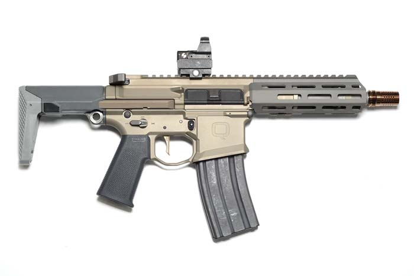

Přeji dobrý den

Medojed ale není pouze zvíře. Pojďme se tedy podívat na to, co ještě se jmenuje medojed.
Youtube tvůrce

Medojed je tvůrce videí na YT, kde se věnuje hlavně filmů a seriálům.
Zbraň

Medojed je také i model útočné pušky.